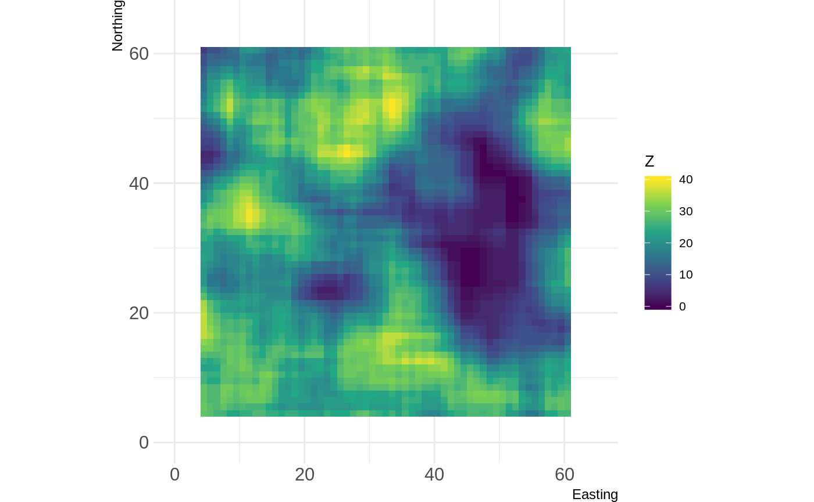
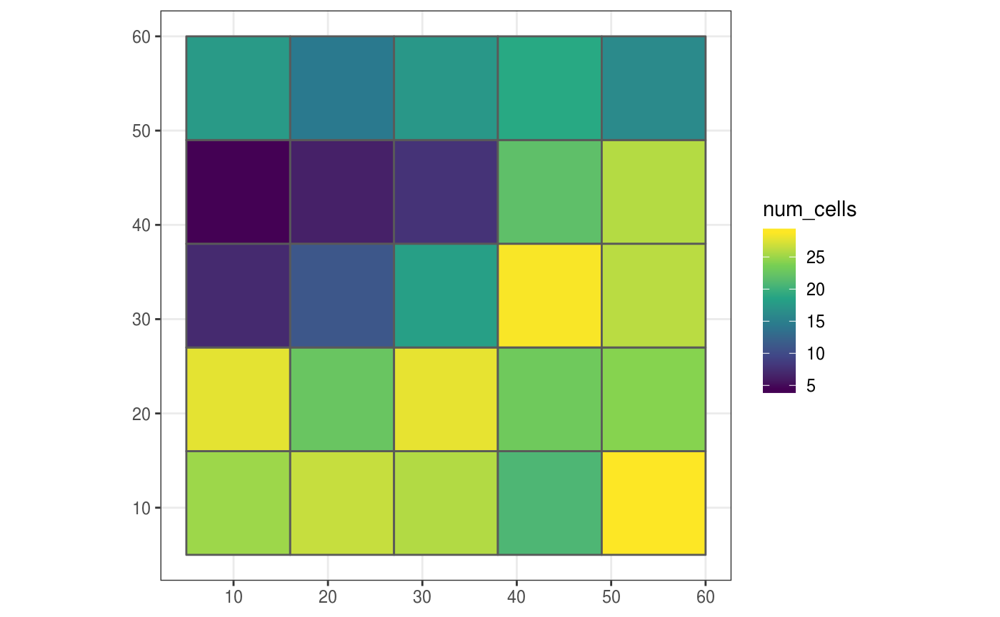
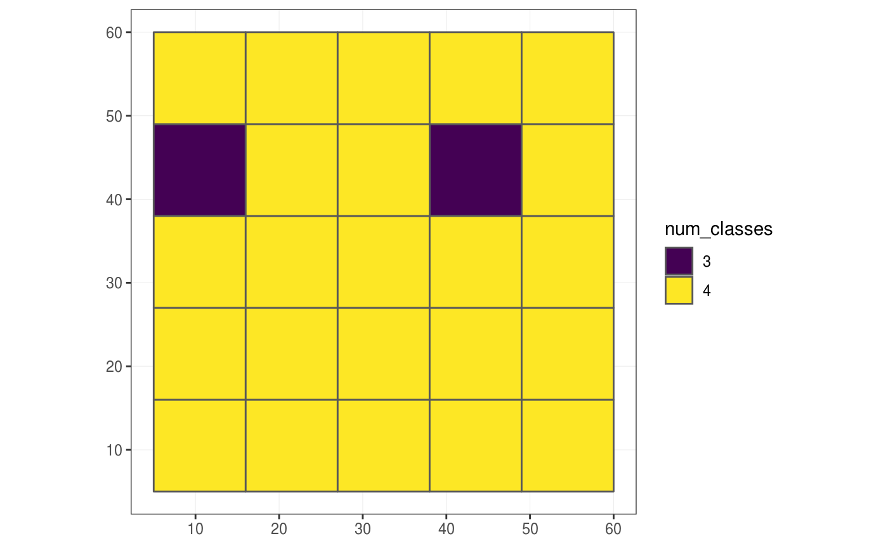
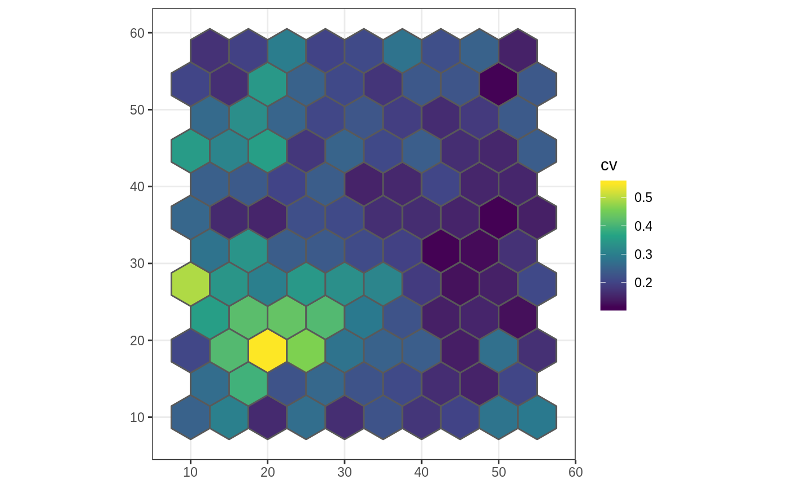

Within the winmove, winmove_agg and nomove_agg functions, it is possible to use user-defined functions for both win_fun and agg_fun arguments.
WARNING User-defined functions can be slower within the
grainchangerfunctions because they have not been optimised. This is likely to be of particular issue with large datasets.
win_fun exampleAny user-defined win_fun should follow the rules of the fun argument in raster::focal:
The function fun should take multiple numbers, and return a single number. For example mean, modal, min or max. It should also accept a na.rm argument (or ignore it, e.g. as one of the ‘dots’ arguments. For example, length will fail, but function(x, …){na.omit(length(x))} works.
In this example, we define a function which counts the number of cells of a given class within a moving window.
library(grainchanger)
library(landscapetools)
num_cells <- function(x, lc_class, ...) {
return(sum(x == lc_class))
}
d <- winmove(cat_ls, 4, "rectangle", num_cells, lc_class = 2)
show_landscape(d) 
This can also be used within winmove_agg
library(ggplot2)
g_sf$num_cells <- winmove_agg(g_sf, cat_ls, 4, "rectangle", num_cells, lc_class = 2)
#> aggregation assumes all cells are rectangular
#> ● set `is_grid = FALSE` if coarse_dat is not a grid
ggplot(g_sf, aes(fill = num_cells)) +
scale_fill_viridis_c() +
geom_sf() +
theme_bw()
agg_fun
In this example, we define a function which calculates the number of land cover classes within each coarse grain cell.
num_classes <- function(x, ...) {
length(unique(x))
}
g_sf$num_classes <- nomove_agg(g_sf, cat_ls, num_classes)
#> aggregation assumes all cells are rectangular
#> ● set `is_grid = FALSE` if coarse_dat is not a grid
ggplot(g_sf, aes(fill = as.factor(num_classes))) +
scale_fill_viridis_d("num_classes") +
geom_sf() +
theme_bw()
We can also define functions which work on continuous landscapes. For example, below we calculate the coefficient of variation for each coarse cell.
cv <- function(x) {
sd(x) / mean(x)
}
poly_sf$cv <- nomove_agg(poly_sf, cont_ls, cv)
#> aggregation assumes all cells are rectangular
#> ● set `is_grid = FALSE` if coarse_dat is not a grid
ggplot(poly_sf, aes(fill = cv)) +
scale_fill_viridis_c() +
geom_sf() +
theme_bw()